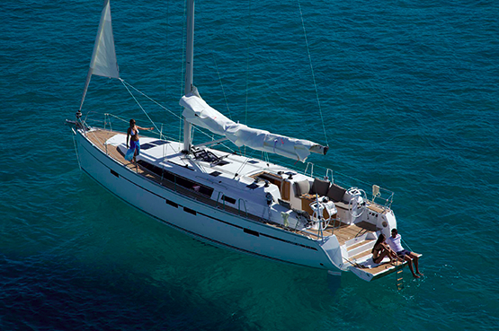
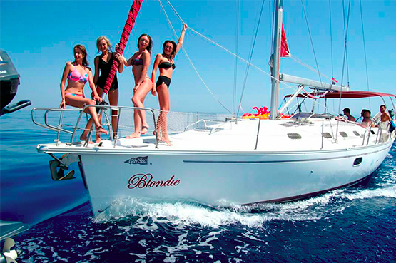

линия
На яхте
линия



Идеальное пространство для Комфортного Путешествия!
29 апреля - 6 мая
на парусной яхте по островам Греции!
Идеальное пространство для Комфортного Путешествия!
Обязательно стоит взойти к Акрополю, порадоваться затейливой смене караула у Парламента, побродить у сувенирных лавок на площади Монастираки и отыскать одну из уютных кофеен, с "грик кофи" (не вздумайте назвать его по-турецки ;) и представить рядышком Аристотеля.
Главная достопримечательность острова - Храм Афайи, один из трёх величайших храмов Древней Греции. А еще древний миф гласит, что первыми жителями острова Эгина были муравьи, превращённые Зевсом в людей. Трудолюбивые муравьи превратили остров в фисташковую столицу :) Здешние фисташки волшебны!
Всегда теплые термальные воды из-за действующего вулкана, на который совершенно необходимо взобраться, Ландшафт застывшей вулканической лавы поистине прекрасен, идеальная Йога-набережная и совсем рядышком необитаемый остров-малыш Мони, где живут ручные олени и павлины! Возьмите с собой немного хлеба и красивая фоточка Вам гарантирована!
Остров тысячи яхт! Из-за удобного пролива вы всегда встретите на Поросе тысячи яхтсменов из разных уголков земли. Настоящая часовня с боем и красивая церквушка на горе с видом одновременно и на запад и на восток! Еще здесь есть ночные клубы и бильярд. Развалины форта русских моряков, красивые пляжи, велосипеды напрокат.
Остров давший грекам больше всех Адмиралов во время войны за независимость. Даже сейчас гавань это настоящая Крепость ощетинившаяся пушками. На Идре запрещены совершенно любые механические средства передвижения! Поэтому здесь ослики возят всё :) На этом острове находится гора Эрос, а на пути к ней Монастырь, где можно угоститься лукумом сделанным монахами.
Остров шикарных вилл и пляжей. Самый зеленый из местных островов по которому можно прокатиться взяв в аренду квадрики. Огромный работающий маяк в парке украшенном современными скульптурами и просто памятниками. А самое главное - пляжи! Пляжи окружают остров со всех сторон: Передайз, Кайики, Козунос и у каждого рейтинг 5+ на TripAdvisor!